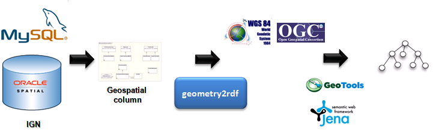

")
")
geometry2rdf
geometry2rdf es una librería para generar ficheros RDF a partir de información geométrica (que puede estar disponible en GML o WKT). La manipulación del GML y WKT se realiza con GeoTools. La version actual de la librería trabaja con bases de datos geoespaciales y se basaa en Jena.

geometry2rdf ha sido desarrollado por el equipo de GeoLinked Data (.es).
Para descargar la librería, utilice el siguiente enlace.
Quick start
Necesitas:
- Java 1.5 o superior en el path (comprueba con java -version si no estás seguro)
Que hacer:
- Descargar y extraer los archivos a un directorio de trabajo.
- La distribución actual viene con un un fichero de propiedades de ejemplo. Este fichero puede usarse como el fichero base con el que puedes empezar a trabajar.
- Ejecuta geometry2rdf desde línea de comandos.
- Espera hasta que finalice, y comprueba el fichero rdf creado.
Trabajando con el fichero de configuración
La librería necesita un fichero de propiedades para su ejecución. El nombre por defecto del fichero es options.properties. Se proporciona un fichero de pruebas con ese nombre en la distribución para us uso. Si quieres usar un fichero diferente, cambia la ruta del fichero de propiedades en el fichero bat.
Ejemplo de fichero de propiedades
Aquí tenemos un ejemplo de fichero de configuración:
############################### Input and output parameters
##############################
inputDir = temp
outputFile = temp/output.rdf
##############################
# DDBB parameters
##############################
# 0-MSAccess 1-MYSQL 2-Oracle
dbType=2
dbName=alias
dbUserName=user
dbPassword=pass
dbHost=localhost
dbPort=1122
resourceName=River
tableName=EXAMPLE_TABLE
condition=upper(label) like upper('River %') or upper(label) like upper('Rivers %')
labelColumnName=label
geometryColumnName=geometryColumn
##############################
#Namespaces paramters
##############################
# Optional parameters. Change these parameters if you want to use different values for the namespaces and prefixes
nsPrefix=georesource
nsURI=http://geo.linkeddata.es/resource/
ontologyNSPrefix=geontology
ontologyNS=http://geo.linkeddata.es/ontology/
##############################
# Reference systems parameters
##############################
# Optional parameters. Used when a reference system change wants to be made.
gmlSourceRS=SDO:8223
gmlTargetRS=EPSG:4230
# Optional parameters. These fields should be filled in if a transformation between EPSG reference system is needed
sourceRS=EPSG:4230
targetRS=EPSG:4326
##############################
# Types parameters
##############################
# Optional parameters. URI for types point, linstring and plygon. Notice that the URI must be encoded in UTF-8. By defaults, their values will be those listed below.
pointType=http://www.w3.org/2003/01/geo/wgs84_pos#Point
linestringType=http://geo.linkeddata.es/ontology/Curva
polygonType=http://geo.linkeddata.es/ontology/Pol%C3%ADgono
# Optional parameter. This parameter is used to describe the relation between a geometry and the points of that geometry. By default, the value will be "formadoPor"
formBy=formadoPor
##############################
# Other parameters
##############################
# Optional parameters. Default lang for the labels created in the output RDF. By default, the value will be Spanish-es
defaultLang=es
Estructura del fichero de propiedades:
1. Input and output parameters
Directorio de trabajo y nombre del fichero de salida.
2. DDBB parameters
Todos los parámetros necesarios para la conexión con la BBDD se configuran en esta sección. También se configuran en esta sección el nombre del tipo de recursos que se van a crear.
3. Namespaces parameters
En esta sección se indican los namespaces y prefijos para los recursos generados y para la ontología usada.
4. Reference systems parameters
Geometry2rdf funciona para sistemas de referencia EPSG. Si tus datos gml no están en EPGS, se necesita una transformación entres tu sistema de referencia y un sistema de referencia EPSG. Para ello, utiliza los campos fields gmlSourceRS y gmlTargetRS. Si se require o se desea alguna tranformación más para los datos en el fichero RDF resultante, utilice sourceRS and targetRS.
5. Types parameters
En esta sección, se definen las URIs para los recursos Point, Linestring and Polygon. También se define la URI de la relación "formBy". Un recurso Linestring y Polygon están "formBy" Points.
6. Other parameters
En esta sección, se define el lenguaje por defecto de las etiquetas de cada recurso.
Ejemplos de ficheros RDF de salida.
Aquí puedes consultar unos ejemplos de ficheros RDF de salida:
- Ejemplo de un recurso de tipo Municipio con geometría formada por un único punto. Enlace.
- Ejemplo de un recurso de tipo Balsa con una geometría de tipo Linestring. Enlace.
- Ejemplo de un recurso de tipo Pozo con una geometría de tipo Polygon. Enlace.

Created under Creative Commons License - 2015 OEG.